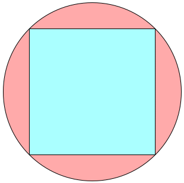
s = √2 = 1.414+

s = 1.523+
Maurizio Morandi
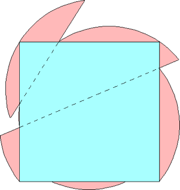
s = 1.551+
Maurizio Morandi
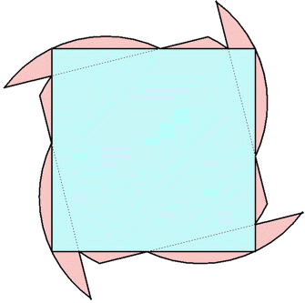
s = 1.614+
Jeremy Galvagni
| n=0 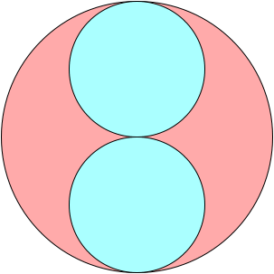 r = 1/2 = .500 | n=1 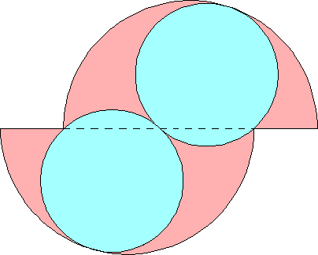 r = 9/16 = .562+ Maurizio Morandi n=2 | 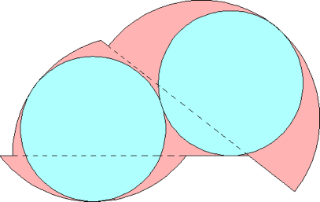 r = .611+ Maurizio Morandi n=3 | 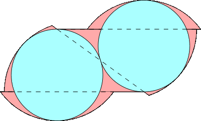 r = .656+ Joe DeVincentis |
| n=0 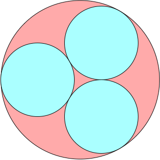 r = 2√3–3 = .464+ | n=1 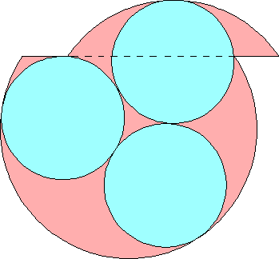 r = .478+ Maurizio Morandi n=2 | 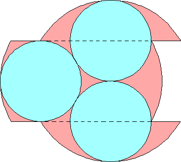 r = 1/2 = .500 Maurizio Morandi n=3 | 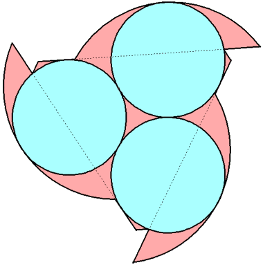 r = .510+ Jeremy Galvagni |
| n=0 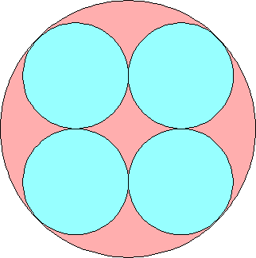 r = √2–1 = .414+ | n=1 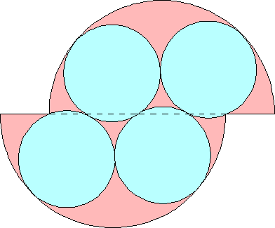 r = .427+ Maurizio Morandi | n=2 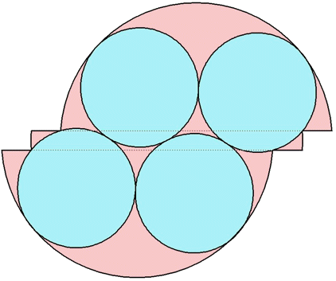 r = .433+ Jeremy Galvagni |
| n=0 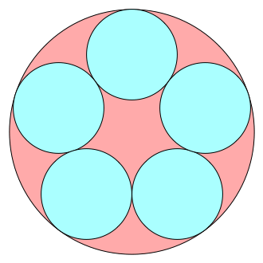 r = .370+ | n=1 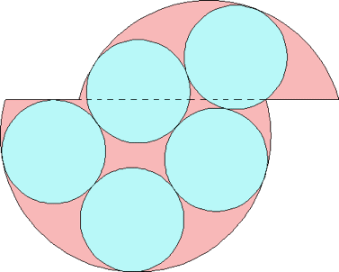 r = .382+ Maurizio Morandi |
| n=0, 1 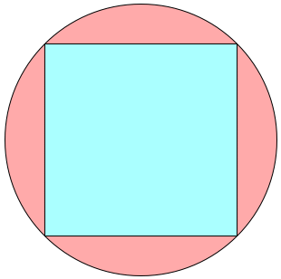 s = √2 = 1.414+ | n=2 s = 1.523+ Maurizio Morandi n=3 | 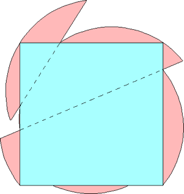 s = 1.551+ Maurizio Morandi n=4 | 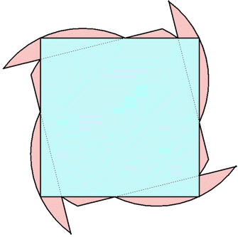 s = 1.614+ Jeremy Galvagni |
| n=0 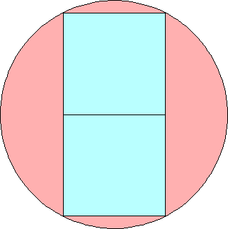 s = 2/√5 = .894+ | n=1 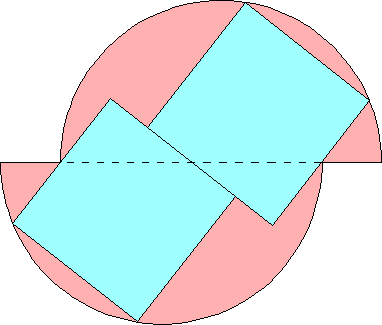 s = .985+ Maurizio Morandi n=2 | 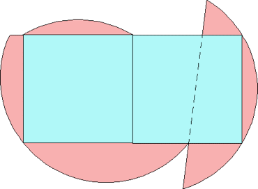 s = 1.035+ Maurizio Morandi n=3 | 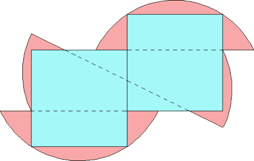 s = 1.090+ Maurizio Morandi |
| n=0 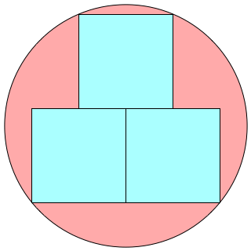 s = 16/5√17 = .776+ | n=1 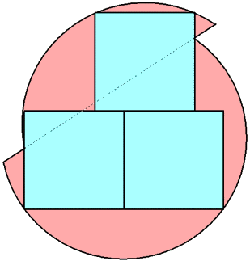 s = .808+ Jeremy Galvagni | n=2 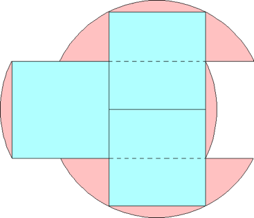 s = 2/√5 = .894+ Maurizio Morandi |
n=0 s = 1/√2 = .707+ | n=1 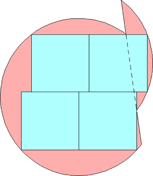 s = .736+ Maurizio Morandi |
| n=0 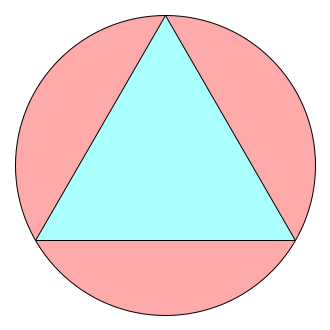 s = √3 = 1.732+ | n=1 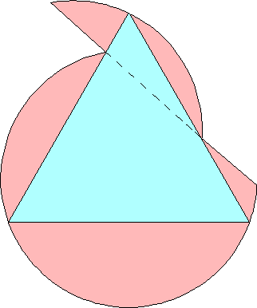 s = 1.882+ Maurizio Morandi | n=2 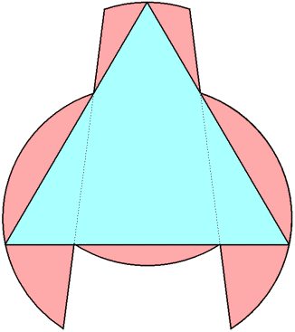 s = 2.122+ Jeremy Galvagni n=3 | 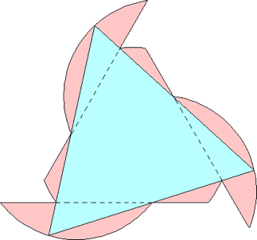 s = 2.237+ Maurizio Morandi n=4 | 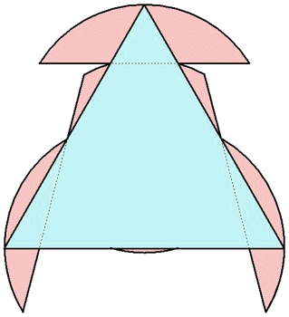 s = 2.265+ Jeremy Galvagni |
| n=0 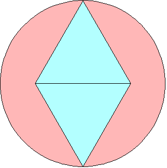 s = 2/√3 = 1.154+ | n=1 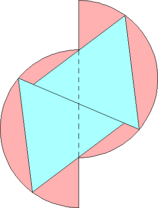 s = 1.462+ Maurizio Morandi n=2 |  s = 4/√7 = 1.511+ Maurizio Morandi n=3 | 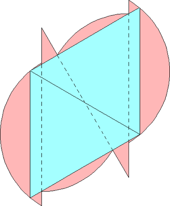 s = 1.543+ Maurizio Morandi |
| n=0 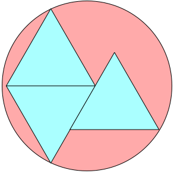 s = (√3+√2)/3 = 1.048+ | n=1 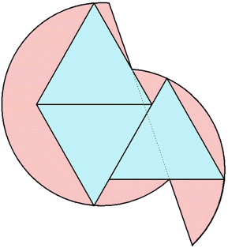 s = 1.151+ Jeremy Galvagni |
| n=0, 1 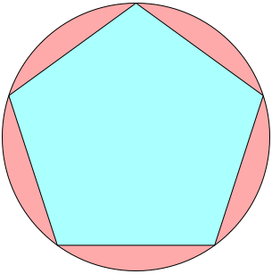 s = 1.175+ | n=2 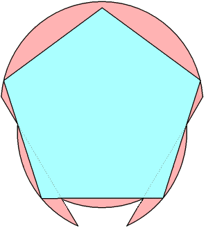 s = 1.203+ Jeremy Galvagni |
| n=0, 1 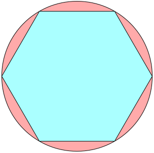 s = 1 | n=2 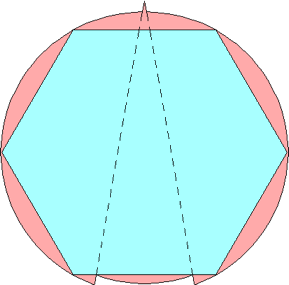 s = 1.007+ Maurizio Morandi | n=3 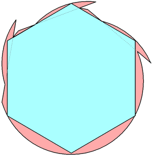 s = 1.018+ Jeremy Galvagni |
If you can extend any of these results, please e-mail me. Click here to go back to Math Magic. Last updated 11/19/17.